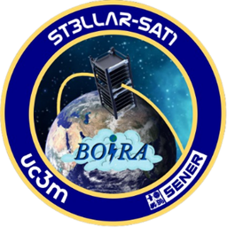
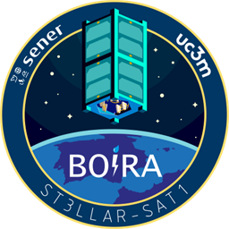
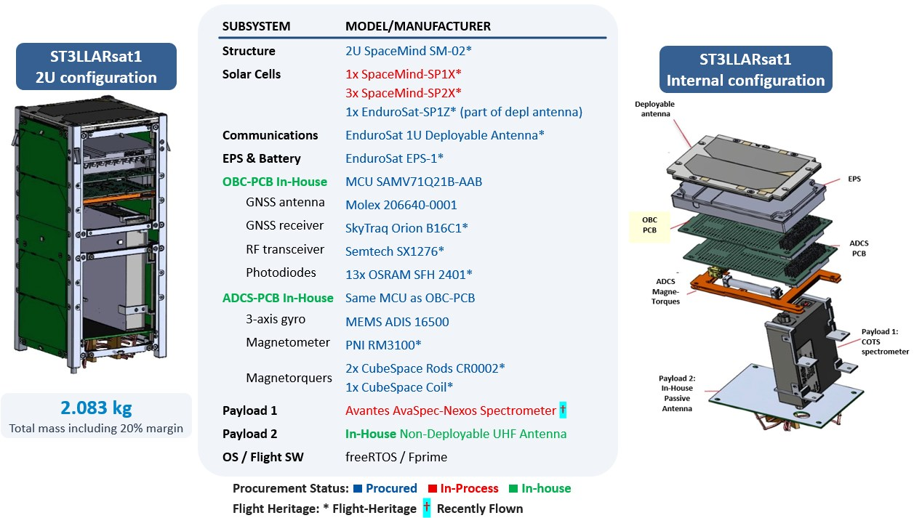
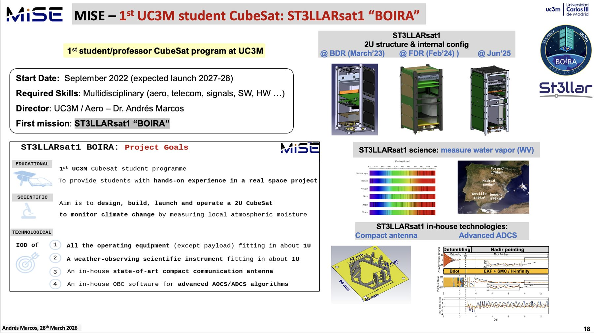

ST3LLARsat1 “Boira”
Our 1st CubeSat mission


Introduction

ST3LLARsat1 “Boira” is the 1st mission of UC3M student-based / professor-led CubeSat program ST3LLARsat. The ST3LLAR program started in September 2022 within UC3M’s Master in Space Engineering (MISE), and our 1st mission was selected by the European Space Agency (ESA) in December 2022 for its 1.5-years Fly Your Satellite! Design Booster (FYS-DB) pilot program. ESA’s support enabled us to ‘boost’ our design development and to successfully pass ESA Academy’s Final Design Review in June 2024, which was fundamental to continue our activities subsequently.
The aim of ST3LLARsat1 “Boira” is to design, integrate, validate and operate a 2U CubeSat in LEO (415–500 km, 96–98° inclination) by students with the primary goal being educational and secondary goals related to science and technological in-orbit demonstration (IOD).
The educational goal is achieved by providing our students with hands-on experience in a real space project via a hybrid approach of formal learning and practical application. The former is structured around the MISE, see more details in the “program overview”, where the students are exposed to lectures & seminars as well as team projects & individual theses related to space. The practical component comes from the fact that it is our students who are responsible for the study, design, and development of all the tasks (guided and supported by MISE academic staff).
The scientific goal is to demonstrate that valid atmospheric water vapor (WV) measurements can be taken in such a small CubeSat and with a commercial-off-the-shelf (COTS) scientific instrument. The measurement of atmospheric water vapor (WV) was chosen as it is one of the main indicators used for climate change monitoring. Indeed, two thirds of the greenhouse effect is caused by WV, while in comparison to other contributor gases it has a much higher temporal and spatial variability. It is noted that “boira” means fog in two of the official languages in Spain: Catalan and Galician.
The main technological goal is to prove that we are capable of designing, building, launching, and operating a CubeSat of dimension 2U. This dimension was chosen as a trade-off between cost/complexity (smaller size better for both) and available volume (the larger the better to incorporate all equipment). As part of the more specific technological IOD objectives, ST3LLARsat1 plans to demonstrate four (4) in-house technologies: (i) a novel, compact, dual-circular, non-deployable antenna; (ii) an on-board computer (OBC) PCB, including the software and a coarse sun sensor (CSS); (iii) an attitude determination and control system (ADCS) PCB; and (iv) the ADCS algorithms.
A snapshot of ST3LLARsat1 “Boira” is given in the next figure:

ST3LLARsat1 at a glance
Main characteristics of the spacecraft and its orbitThe mission in numbers
As of November 2026Explore the mission
Mission
Mission objectives, concept of operations, mission analysis, orbit flexibility and de-orbiting.
Read moreSpacecraft
Design summary, engineering drawings, electrical and data architecture, structure and launcher interfaces.
Read moreAIVT
Model philosophy, development plan and environmental acceptance envelopes.
Read moreProgram
Project phases and current status, ESA Fly Your Satellite! Design Booster, knowledge hand-over and funding.
Read moreDocuments
Dissemination outputs, theses and student reports.
Read more